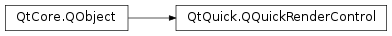

QQuickRenderControl¶
Synopsis¶
Functions¶
- def
grab() - def
initialize(gl) - def
invalidate() - def
polishItems() - def
prepareThread(targetThread) - def
render() - def
sync()
Virtual functions¶
- def
renderWindow(offset)
Signals¶
- def
renderRequested() - def
sceneChanged()
Static functions¶
- def
renderWindowFor(win[, offset=nullptr])
Detailed Description¶
The
PySide2.QtQuick.QQuickRenderControlclass provides a mechanism for rendering the Qt Quick scenegraph onto an offscreen render target in a fully application-controlled manner.
PySide2.QtQuick.QQuickWindowandPySide2.QtQuick.QQuickViewand their associated internal render loops render the Qt Quick scene onto a native window. In some cases, for example when integrating with 3rd party OpenGL renderers, it might be beneficial to get the scene into a texture that can then be used in arbitrary ways by the external rendering engine.PySide2.QtQuick.QQuickRenderControlmakes this possible in a hardware accelerated manner, unlike the performance-wise limited alternative of usingQQuickWindow.grabWindow()When using a
PySide2.QtQuick.QQuickRenderControl, thePySide2.QtQuick.QQuickWindowdoes not have to be shown or even created at all. This means there will not be an underlying native window for it. Instead, thePySide2.QtQuick.QQuickWindowinstance is associated with the render control, using the overload of thePySide2.QtQuick.QQuickWindowconstructor, and an OpenGL framebuffer object by callingQQuickWindow.setRenderTarget().Management of the context and framebuffer object is up to the application. The context that will be used by Qt Quick must be created before calling
PySide2.QtQuick.QQuickRenderControl.initialize(). The creation of the framebuffer object can be deferred, see below. Qt 5.4 introduces the ability forPySide2.QtGui.QOpenGLContextto adopt existing native contexts. Together withPySide2.QtQuick.QQuickRenderControlthis makes it possible to create aPySide2.QtGui.QOpenGLContextthat shares with an external rendering engine’s existing context. This newPySide2.QtGui.QOpenGLContextcan then be used to render the Qt Quick scene into a texture that is accessible by the other engine’s context too.Loading and instantiation of the QML components happen by using a QQmlEngine. Once the root object is created, it will need to be parented to the
PySide2.QtQuick.QQuickWindow‘s contentItem().Applications will usually have to connect to 4 important signals:
QQuickWindow.sceneGraphInitialized()Emitted at some point after callingQQuickRenderControl.initialize(). Upon this signal, the application is expected to create its framebuffer object and associate it with thePySide2.QtQuick.QQuickWindow.QQuickWindow.sceneGraphInvalidated()When the scenegraph resources are released, the framebuffer object can be destroyed too.QQuickRenderControl.renderRequested()Indicates that the scene has to be rendered by callingPySide2.QtQuick.QQuickRenderControl.render(). After making the context current, applications are expected to callPySide2.QtQuick.QQuickRenderControl.render().QQuickRenderControl.sceneChanged()Indicates that the scene has changed meaning that, before rendering, polishing and synchronizing is also necessary.To send events, for example mouse or keyboard events, to the scene, use
QCoreApplication.sendEvent()with thePySide2.QtQuick.QQuickWindowinstance as the receiver.Note
In general
PySide2.QtQuick.QQuickRenderControlis supported in combination with all Qt Quick backends. However, some functionality, in particularPySide2.QtQuick.QQuickRenderControl.grab(), may not be available in all cases.
-
class
PySide2.QtQuick.QQuickRenderControl([parent=nullptr])¶ Parameters: parent – PySide2.QtCore.QObjectConstructs a
PySide2.QtQuick.QQuickRenderControlobject, with parent objectparent.
-
PySide2.QtQuick.QQuickRenderControl.grab()¶ Return type: PySide2.QtGui.QImageGrabs the contents of the scene and returns it as an image.
Note
Requires the context to be current.
-
PySide2.QtQuick.QQuickRenderControl.initialize(gl)¶ Parameters: gl – PySide2.QtGui.QOpenGLContextInitializes the scene graph resources. The context
glhas to be the current OpenGL context or null if it is not relevant because a Qt Quick backend other than OpenGL is in use.Note
Qt Quick does not take ownership of the context. It is up to the application to destroy it after a call to
PySide2.QtQuick.QQuickRenderControl.invalidate()or after thePySide2.QtQuick.QQuickRenderControlinstance is destroyed.
-
PySide2.QtQuick.QQuickRenderControl.invalidate()¶ Stop rendering and release resources. Requires a current context.
This is the equivalent of the cleanup operations that happen with a real
PySide2.QtQuick.QQuickWindowwhen the window becomes hidden.This function is called from the destructor. Therefore there will typically be no need to call it directly. Pay attention however to the fact that this requires the context, that was passed to
PySide2.QtQuick.QQuickRenderControl.initialize(), to be the current one at the time of destroying thePySide2.QtQuick.QQuickRenderControlinstance.Once has been called, it is possible to reuse the
PySide2.QtQuick.QQuickRenderControlinstance by callingPySide2.QtQuick.QQuickRenderControl.initialize()again.Note
This function does not take QQuickWindow::persistentSceneGraph() or QQuickWindow::persistentOpenGLContext() into account. This means that context-specific resources are always released.
-
PySide2.QtQuick.QQuickRenderControl.polishItems()¶ This function should be called as late as possible before
PySide2.QtQuick.QQuickRenderControl.sync(). In a threaded scenario, rendering can happen in parallel with this function.
-
PySide2.QtQuick.QQuickRenderControl.prepareThread(targetThread)¶ Parameters: targetThread – PySide2.QtCore.QThreadPrepares rendering the Qt Quick scene outside the gui thread.
targetThreadspecifies the thread on which synchronization and rendering will happen. There is no need to call this function in a single threaded scenario.
-
PySide2.QtQuick.QQuickRenderControl.render()¶ Renders the scenegraph using the current context.
-
PySide2.QtQuick.QQuickRenderControl.renderRequested()¶
-
PySide2.QtQuick.QQuickRenderControl.renderWindow(offset)¶ Parameters: offset – PySide2.QtCore.QPointReturn type: PySide2.QtGui.QWindowReimplemented in subclasses to return the real window this render control is rendering into.
If
offsetin non-null, it is set to the offset of the control inside the window.Note
While not mandatory, reimplementing this function becomes essential for supporting multiple screens with different device pixel ratios and properly positioning popup windows opened from QML. Therefore providing it in subclasses is highly recommended.
-
static
PySide2.QtQuick.QQuickRenderControl.renderWindowFor(win[, offset=nullptr])¶ Parameters: - win –
PySide2.QtQuick.QQuickWindow - offset –
PySide2.QtCore.QPoint
Return type: Returns the real window that
winis being rendered to, if any.If
offsetin non-null, it is set to the offset of the rendering inside its window.- win –
-
PySide2.QtQuick.QQuickRenderControl.sceneChanged()¶
-
PySide2.QtQuick.QQuickRenderControl.sync()¶ Return type: PySide2.QtCore.boolThis function is used to synchronize the QML scene with the rendering scene graph.
If a dedicated render thread is used, the GUI thread should be blocked for the duration of this call.
Returns true if the synchronization changed the scene graph.
© 2018 The Qt Company Ltd. Documentation contributions included herein are the copyrights of their respective owners. The documentation provided herein is licensed under the terms of the GNU Free Documentation License version 1.3 as published by the Free Software Foundation. Qt and respective logos are trademarks of The Qt Company Ltd. in Finland and/or other countries worldwide. All other trademarks are property of their respective owners.